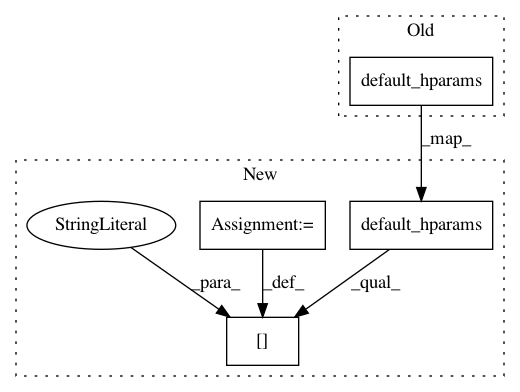

74c062162194fa2d89e85f2a99bf4c71e66d5654,examples/tsf/tsf_trainer.py,TSFTrainer,__init__,#TSFTrainer#Any#,25
Before Change
class TSFTrainer:
TSF trainer.
def __init__(self, hparams=None):
self._hparams = HParams(hparams, self.default_hparams(),
allow_new_hparam=True)
@staticmethod
After Change
class TSFTrainer:
TSF trainer.
def __init__(self, hparams=None):
flags_hparams = self.default_hparams()
if FLAGS.expt_dir:
flags_hparams["expt_dir"] = FLAGS.expt_dir
if FLAGS.log_dir:
flags_hparams["log_dir"] = FLAGS.log_dir
if FLAGS.config:
flags_hparams["config"] = FLAGS.config
if FLAGS.model:
flags_hparams["model"] = FLAGS.model
self._hparams = HParams(hparams, flags_hparams, allow_new_hparam=True)
In pattern: SUPERPATTERN
Frequency: 3
Non-data size: 4
Instances
Project Name: asyml/texar
Commit Name: 74c062162194fa2d89e85f2a99bf4c71e66d5654
Time: 2018-04-02
Author: zichaoy@cs.cmu.edu
File Name: examples/tsf/tsf_trainer.py
Class Name: TSFTrainer
Method Name: __init__
Project Name: asyml/texar
Commit Name: 36f4b18340e2974cfee80e5c347bf7ae7459ab88
Time: 2017-11-29
Author: zichaoy@cs.cmu.edu
File Name: examples/tsf/trainer_base.py
Class Name: TrainerBase
Method Name: __init__
Project Name: asyml/texar
Commit Name: fe3c56d1843822425f9b387966f1f660a1d16714
Time: 2017-09-28
Author: zhitinghu@gmail.com
File Name: txtgen/data/database.py
Class Name: MonoTextDataBase
Method Name: default_hparams